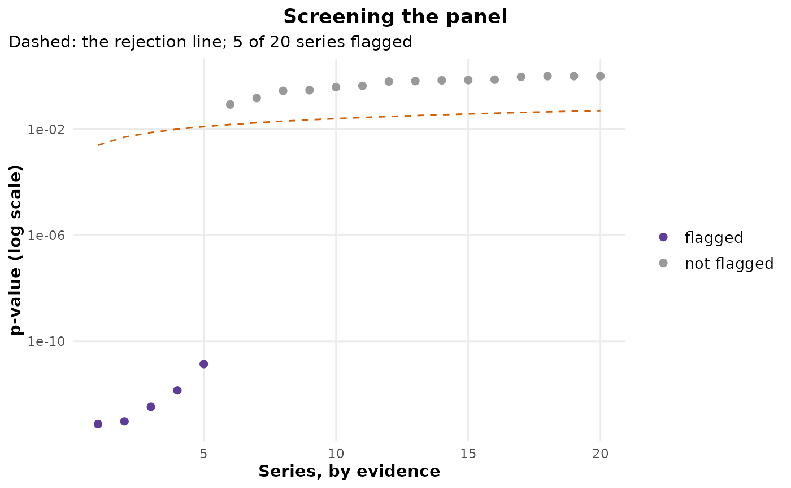

Which of many series changed? Screening with error control across the panel
Source:R/screen.R
cpt_screen.RdTests every series in a panel for a change anywhere, with one of
cpt_test_null()'s tests, adjusts the p-values across the
panel, and returns the series ordered by evidence with the ones that
survive flagged. Optionally runs a detector on the flagged series, so
the segmentation is spent only where there is something to segment.
Usage
cpt_screen(
x,
test = c("pettitt", "cusum", "supF"),
alpha = 0.05,
control = c("fdr", "fdr_dependent", "fwer", "none"),
method = NULL,
...
)
# S3 method for class 'ggcpt_screen'
print(x, ...)
# S3 method for class 'ggcpt_screen'
tidy(x, ...)
# S3 method for class 'ggcpt_screen'
glance(x, ...)
# S3 method for class 'ggcpt_screen'
autoplot(object, ...)Arguments
- x
A list of numeric vectors, or a matrix or data frame with one column per series, as for
cpt_batch(). Forprint(),tidy()andglance(), aggcpt_screenobject.- test
Which test gives each series its p-value:
"pettitt"(default),"cusum"or"supF"; seecpt_test_null(). Pettitt's rank test is the default because a panel adjustment works in the far tail of each test's null distribution, and there its p-value errs on the safe side while the CUSUM's Kolmogorov limit does not at moderate lengths: measured on panels of 100 series of 120 observations, ten of them with a shift of one standard deviation, the false discovery rate atalpha = 0.05was 0.030 with Pettitt and 0.065 with the CUSUM, for the same power (0.97 and 0.98; 300 panels). At 500 observations both held (0.039 and 0.052).- alpha
Error level across the panel. Defaults to
0.05.- control
"fdr"(default): Benjamini-Hochberg control of the false discovery rate, valid for independent series (and positively dependent ones);"fdr_dependent": Benjamini and Yekutieli's version, valid under any dependence between series;"fwer": Holm control of the family-wise error rate;"none": no adjustment, which is what running each test on its own amounts to.- method
Optional detection method. When given, every flagged series is segmented with
cpt_detect()and the result kept in aresultcolumn. Defaults toNULL(screen only).- ...
Passed to
cpt_detect()whenmethodis given.- object
A
ggcpt_screenobject, forautoplot().
Value
A ggcpt_screen tibble with one row per series, ordered by
p-value: series, rank, n, statistic,
p_value, p_adjusted, flagged and location
(where the test statistic peaks), plus n_changepoints and
result (a list-column of ggcpt fits, NULL for
series not flagged) when method is given. print(),
autoplot() (the sorted p-values against the rejection line),
tidy() and glance() work on it.
Why the panel needs its own correction
Each series' p-value is valid for that series. Across a panel of
\(m\) stable series, testing each at alpha flags about
\(m \alpha\) of them, and nothing in a per-series answer says so. The
adjustment is over the series, so its guarantee is about the panel:
under "fdr", of the series flagged, the expected share that did
not change is at most alpha. The tests assume independent
observations within a series, and autocorrelation makes every one of
them reject too often; cpt_assumptions() checks a single
fit for it.
See also
cpt_batch(), which segments every series and
adjusts nothing; cpt_test_null().
Other inference:
cpt_abruptness(),
cpt_assumptions(),
cpt_attribute(),
cpt_attribute_event(),
cpt_confint_coverage(),
cpt_effect(),
cpt_gof(),
cpt_k_weights(),
cpt_null_power(),
cpt_robustness(),
cpt_test_at(),
cpt_test_null()
Examples
set.seed(2026)
panel <- c(lapply(1:15, function(i) rnorm(120)),
lapply(1:5, function(i) c(rnorm(60), rnorm(60, 1.5))))
names(panel) <- paste0("store", 1:20)
sc <- cpt_screen(panel)
sc
#> ggcpt_screen (pettitt test on each series)
#> Series: 20
#> Controls: false discovery rate (Benjamini-Hochberg) at 0.05
#> Flagged: 5
#>
#> # A tibble: 20 × 8
#> series rank n statistic p_value p_adjusted flagged location
#> <chr> <int> <int> <dbl> <dbl> <dbl> <lgl> <int>
#> 1 store16 1 120 2995 7.70e-14 9.65e-13 TRUE 59
#> 2 store18 2 120 2984 9.65e-14 9.65e-13 TRUE 56
#> 3 store17 3 120 2922 3.41e-13 2.27e-12 TRUE 62
#> 4 store20 4 120 2850 1.42e-12 7.12e-12 TRUE 60
#> 5 store19 5 120 2731 1.40e-11 5.61e-11 TRUE 63
#> 6 store11 6 120 957 8.54e- 2 2.85e- 1 FALSE 57
#> 7 store6 7 120 868 1.49e- 1 4.27e- 1 FALSE 94
#> 8 store10 8 120 757 2.78e- 1 6.57e- 1 FALSE 91
#> 9 store15 9 120 745 2.96e- 1 6.57e- 1 FALSE 25
#> 10 store7 10 120 690 3.88e- 1 7.76e- 1 FALSE 58
#> # ℹ 10 more rows
ggplot2::autoplot(sc)
